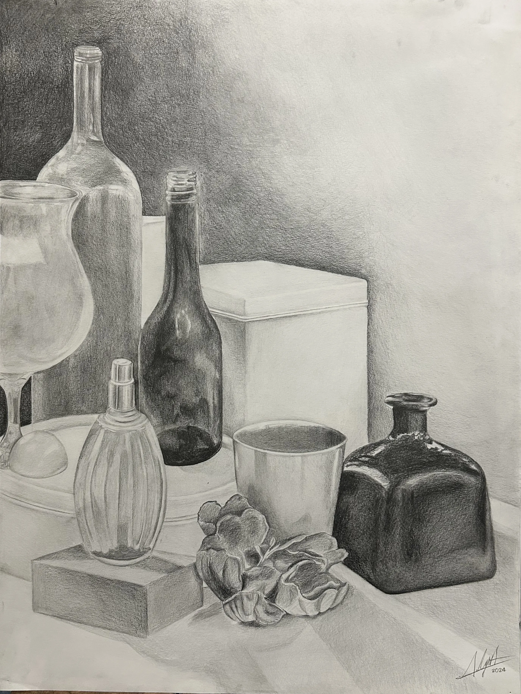
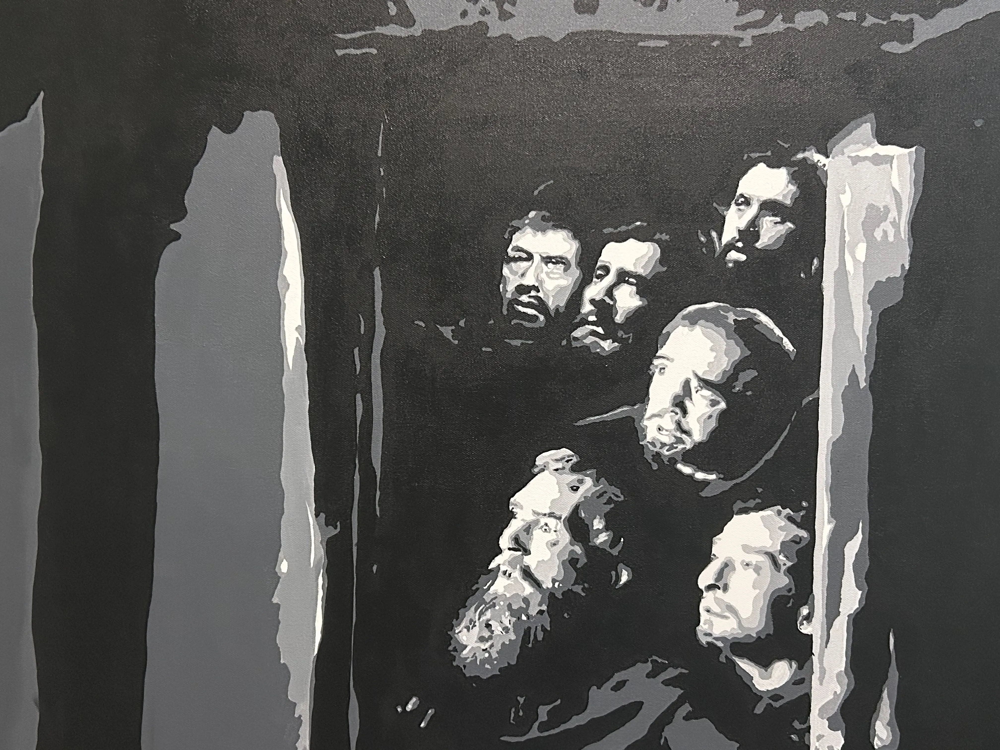
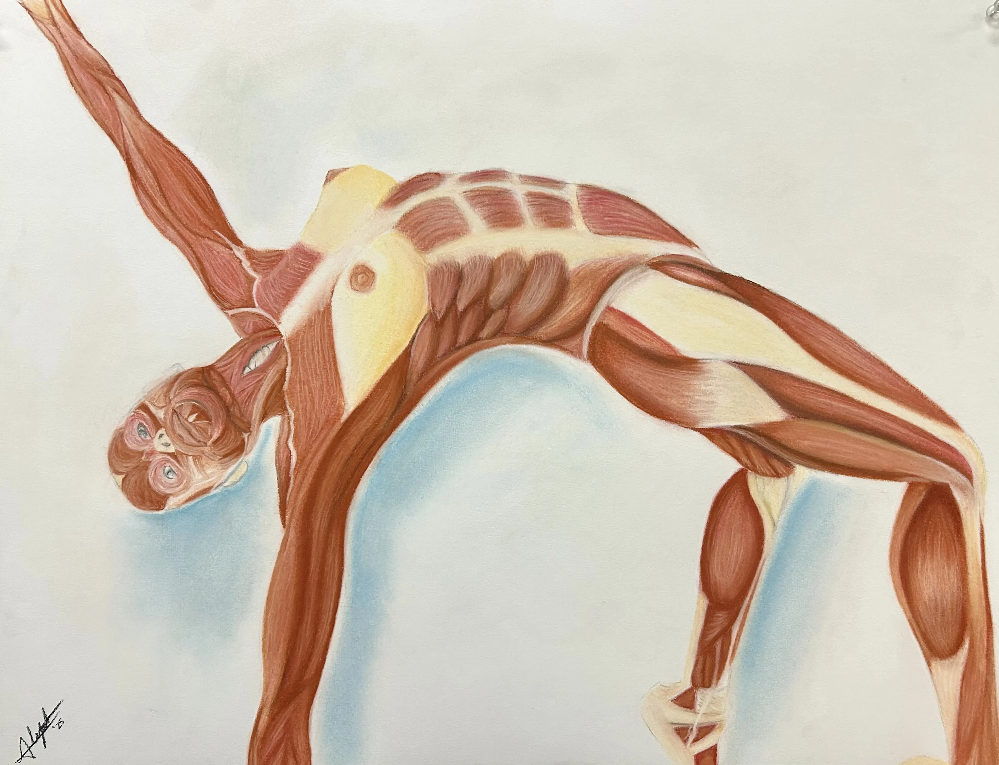
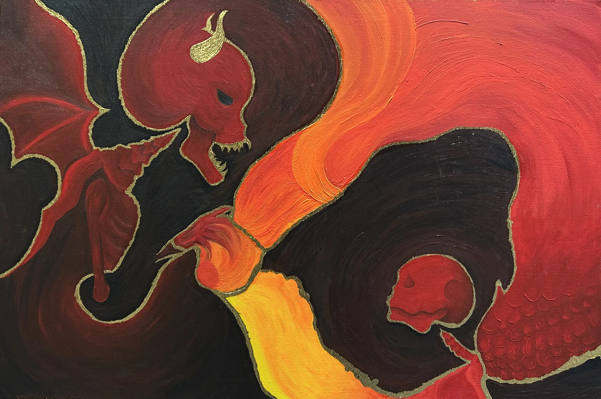
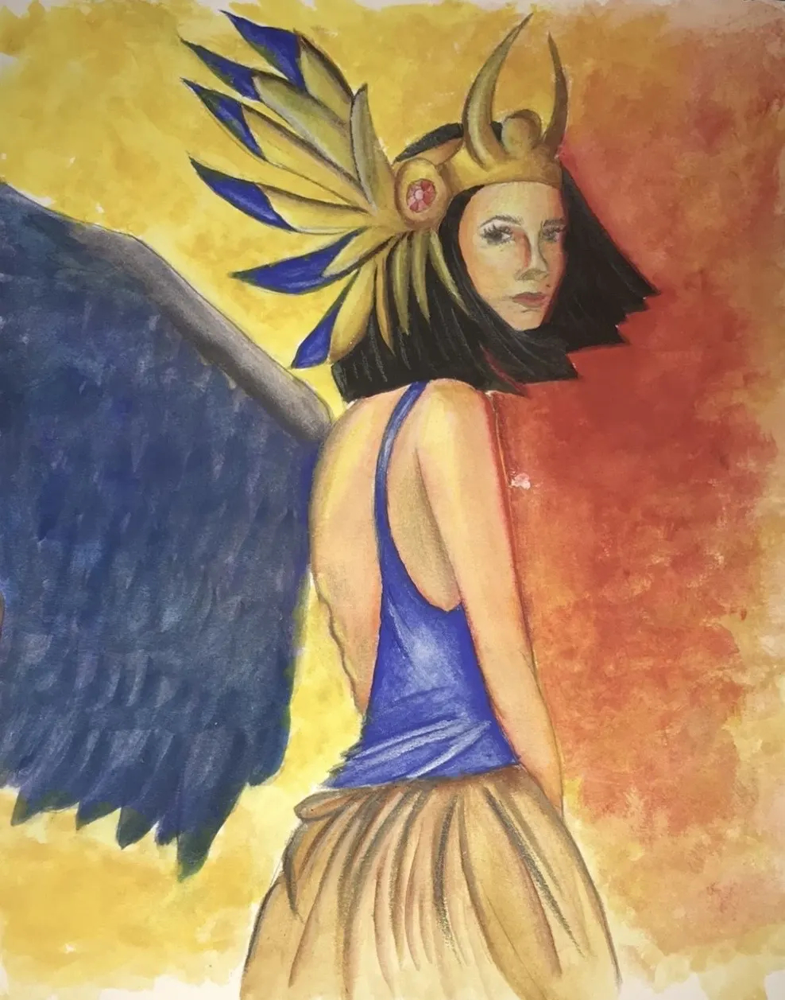
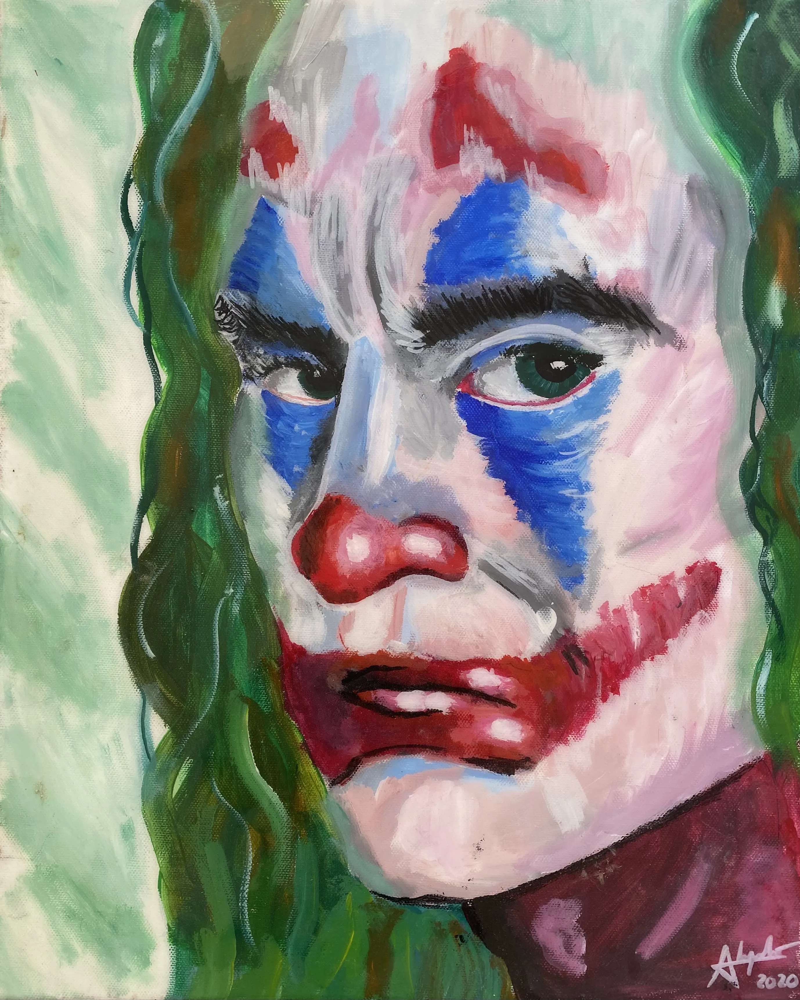
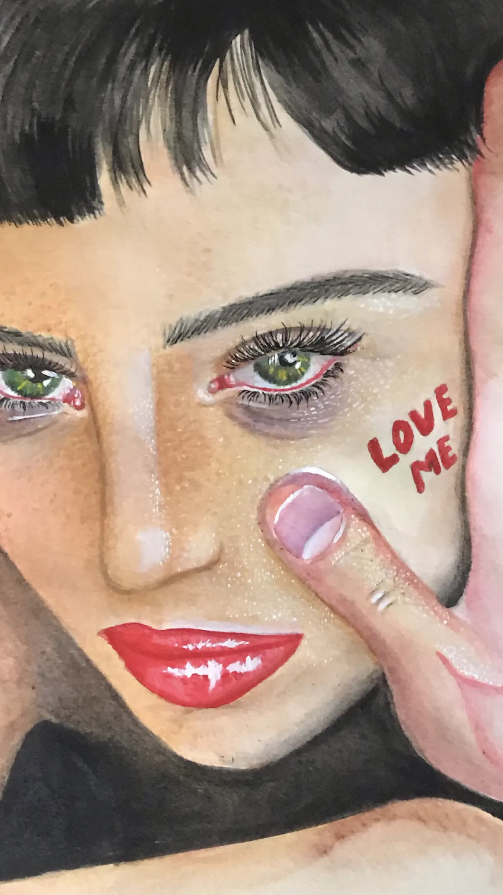
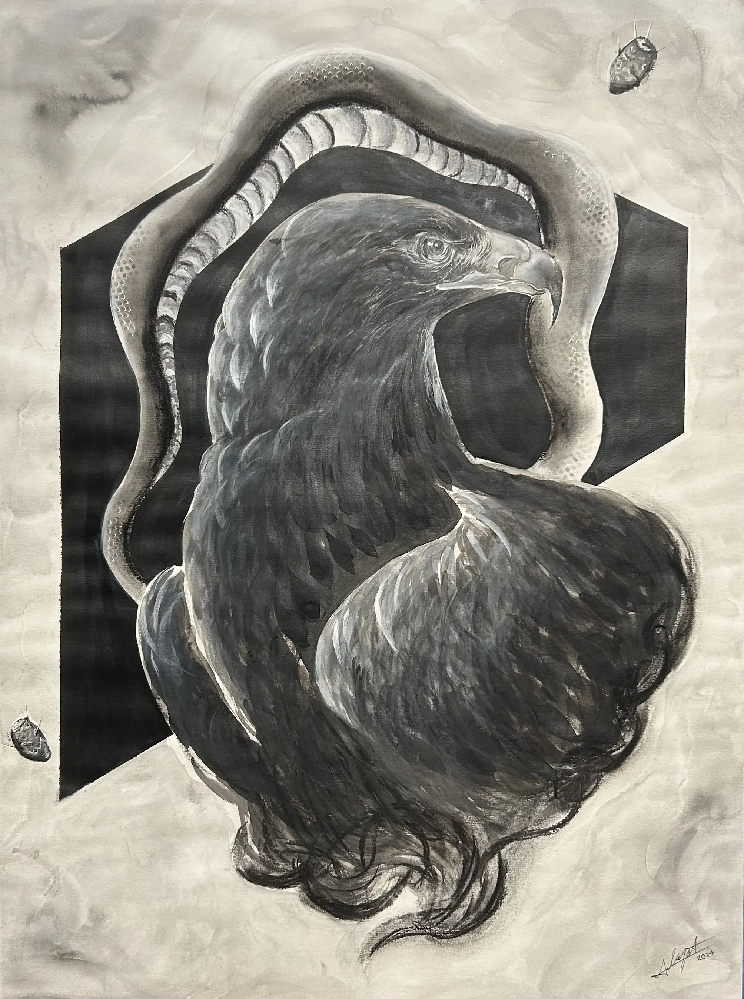
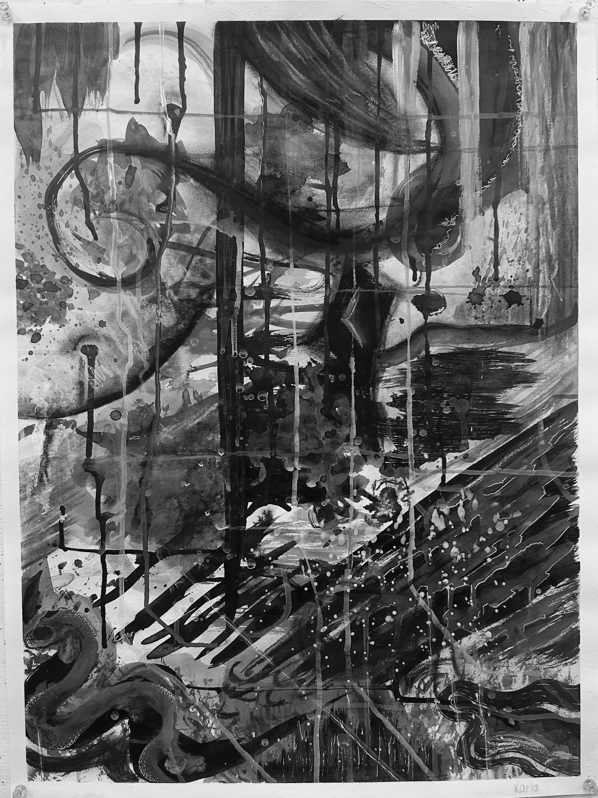

Fine Arts
Traditional and mixed-media explorations in visual expression.











Design without soul is like foodwith no salt.
Traditional and mixed-media explorations in visual expression.








